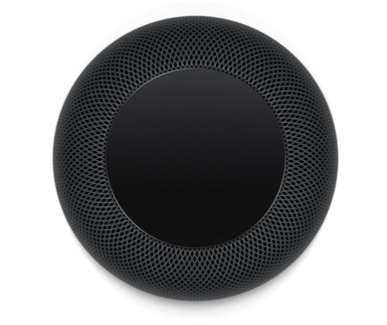

Le HomePod abrite un assistant trés intelligent
Que vous souhaitiez connaître l’état de la circulation, les dernières actualités, les résultats sportifs ou tout simplement vous programmer des rappels divers, Siri est là pour vous prêter main‑forte. Vous pouvez également programmer, annuler et vérifier vos rendez‑vous inscrits dans Calendrier. Fini, les retards et autres occasions manquées.
Passez et recevez des appels directement depuis votre HomePod
Demandez simplement à Siri d’appeler un ami, ou composez un numéro. Chez vous, vous pouvez rediriger automatiquement tous les appels entrants de votre iPhone vers le HomePod en disant « Dis Siri, décroche. »